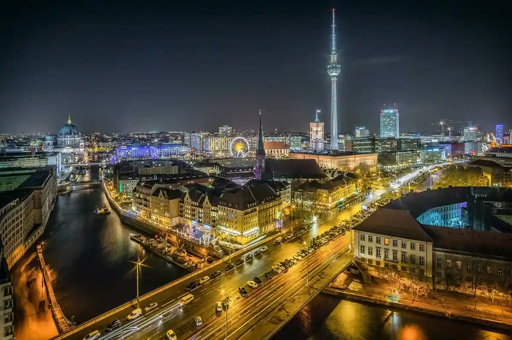

Народився 14.05.2004 в місті Києві
Навчався в Ліцеї №100 "Поділ", на даний момент навчаюсь паралельно в Київському політехнічному інституті та в Технічному університеті Мюнхена
В мене таки хобі:
Улюблені фільми/серіали
Моє улюблене місто в якому я був і жив це Берлін. Перш за все це місто підкорило мене своєю незвичною та багатою культурою та історією. Кожна людина, народжена в будь-якій пострадянській країні, здивується, побачивши як радянське минуле та сучасні будівлі та погляди стикаються буквально на відстані вулиці. 